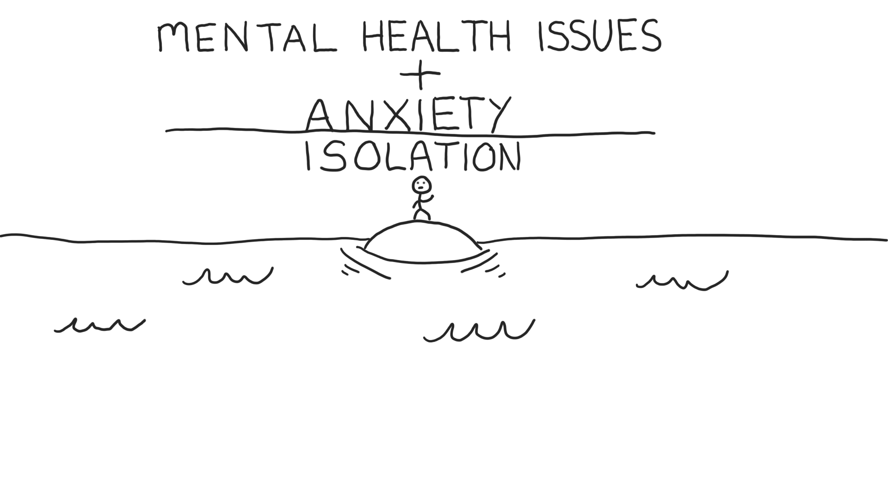
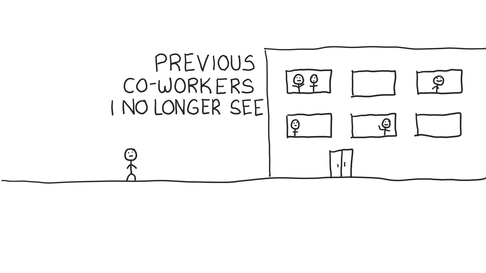
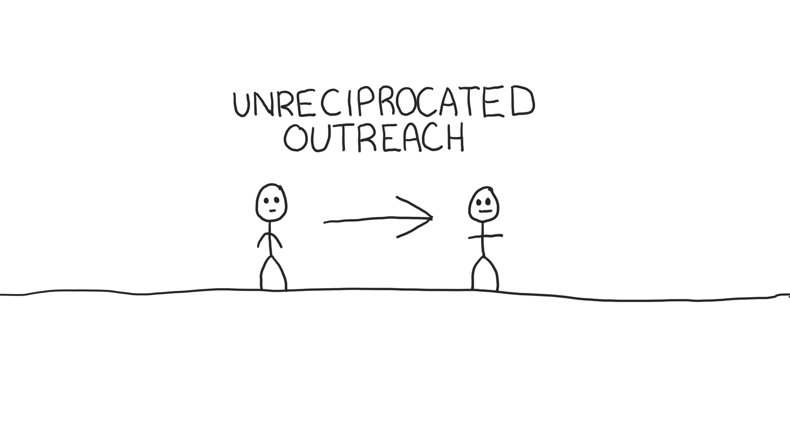
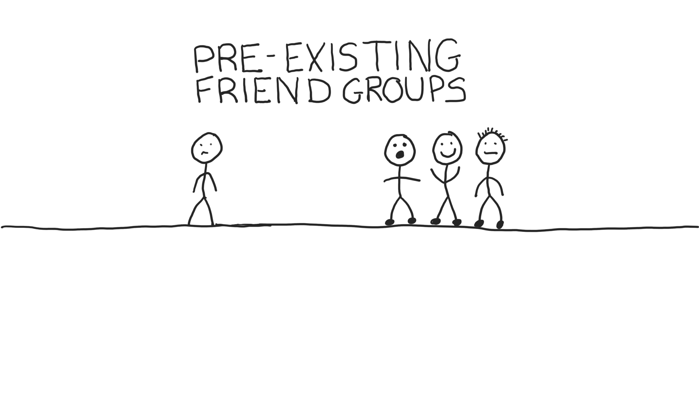
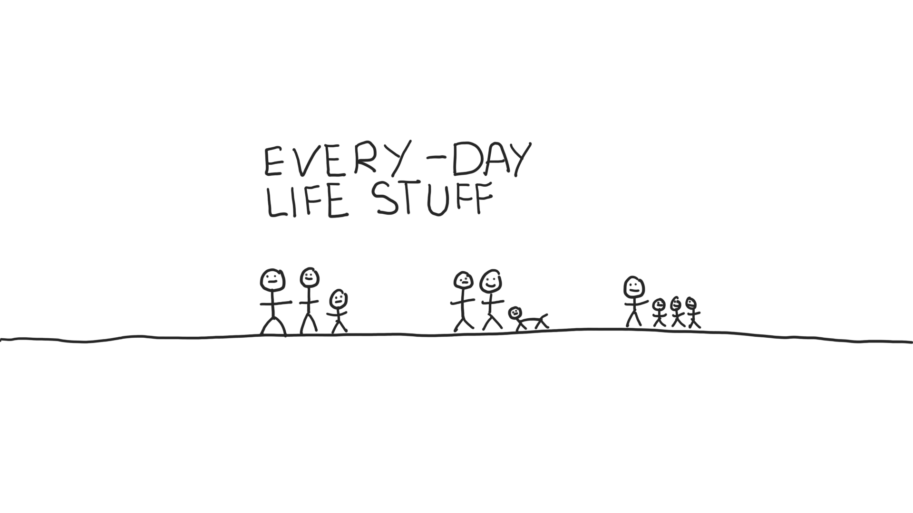
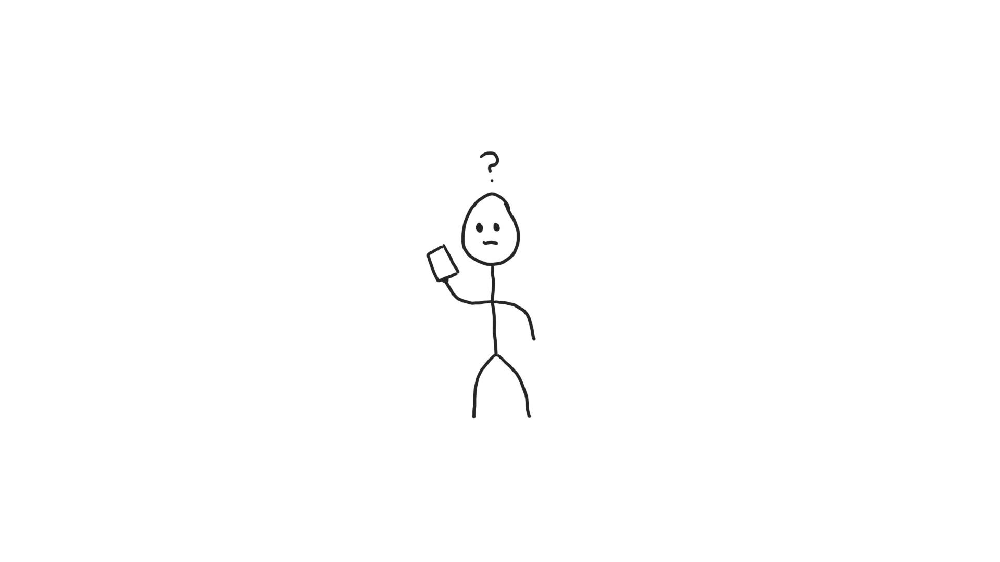

Where'd All My Friends Go?
This one’s a tad uncomfortable to write, and requires me to be a bit vulnerable to share.
The truth is… I don’t have many friends anymore.
What I should say is that if I do still have many friends, we sure as hell don’t talk much (or at all, for that matter). To be fair, I'm not entirely without blame in this area. I've let friendships drift apart, and I own that.
This is absolutely not a you-should-feel-sorry-for-me situation or me seeking attention. And just to be clear, I have friends. Great ones, in fact. It's just been on my mind and something I wanted to be open about. I’ve put a lot of thought into this over the last few years, and I think the reasons fall into a handful of categories.
Anxiety

This is a big one.
If you’re unaware, I’ve struggled with anxiety issues for the last 18 years or so. I’m not talking about occasional or mild instances. I experience extended periods of debilitating anxiety, which has been a factor off and on for almost two decades now. I wish like hell it wasn’t something I had to deal with, but it is what it is. We all have our struggles, and anxiety is my thing. I’ve tried several different medications, years of therapy, EMDR. You name it, chances are I’ve tried it.
Anxiety can be a very isolating condition that many people don’t fully appreciate or understand if they’ve never experienced it themselves. I’ve often had to skip get-togethers or events because my body wasn’t allowing me to participate. Sometimes it’s hard for me to do basic things that people take for granted. I’m sure that people have assumed at times that my absence was simply me not wanting to hang out, which is often not the case. It's not as if I'd be going out five nights a week if I didn't have anxiety, but I'd definitely have a more active social life without it.
Co-Workers Turned Friends That I No Longer Work With

Some of the best friends I’ve made in the last decade or so have been people that I’ve worked with at previous jobs. You always like to think that you’ll keep in touch, and things will stay the same, but it’s rarely the case. When I've left jobs in the past, it has typically more or less ended those relationships. Oftentimes, the friendship holds up fairly strongly initially, but they almost always end up fading away over time. I’ve had a few co-workers that I considered extremely close friends of mine who no longer talk to me at all, and that’s hard for me. That leads somewhat into the next category.
One-Way Friendships

Look. I’m not amazing at staying in touch with people. This extends to family, not just friends. I’m afraid that's just my nature, and I don’t know why. However, I have noticed that there’s some “friends” where we only speak when I initiate contact. I don’t mind striking up the conversation, but if it’s exclusively me reaching out to you, that’s not a great feeling and I’d rather not do it at all. Don’t make me feel like I’m chasing after you, because that’s not a friendship in my eyes.
Pre-Existing Friend Groups

There’s been a few circles that I’ve befriended in the past, but it soon becomes clear that their pre-existing circle of friends is well established and doesn’t hold much room for new members. This one doesn’t bother me so much, as I can understand it more easily. Nonetheless, it’s not great to feel as though you don’t fit in. It's hard to compete with situations where someone's been friends with their inner circle for decades by the time you come along. The unfortunate part of this is that I've encountered some amazing people that fit into this category that I don't keep in contact with.
Life Getting in the Way

It’s undeniable that many times it comes down to the fact that we all get busy with our own lives. I understand that. But lots of people manage to maintain friendships throughout their lives when they decide to keep that friendship a priority. That rarely seems to be the case with me.
Honorable Mention: Reaching Out Feels Awkward

I often find myself in a position where it's been so long since I've spoken with someone that it seems uncomfortable to reach out at that point. I'm sure that's mostly taking place in my head and isn't actually an issue, but it's something I deal with nonetheless. I'll take ownership on this one.
In closing, there's a lot of people I consider friends that I miss like hell and I wish we talked. If you're reading this and you consider me to be a friend and we haven't spoken in some time, hit me up. Odds are I'll be very happy to hear from you. You may greatly underestimate how important you are to me, and I'll gladly let you know if that's the case.